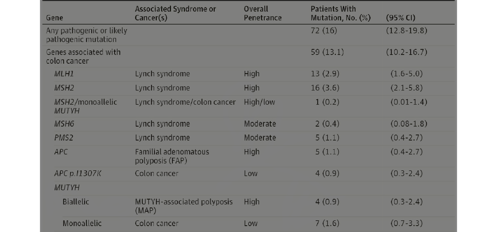
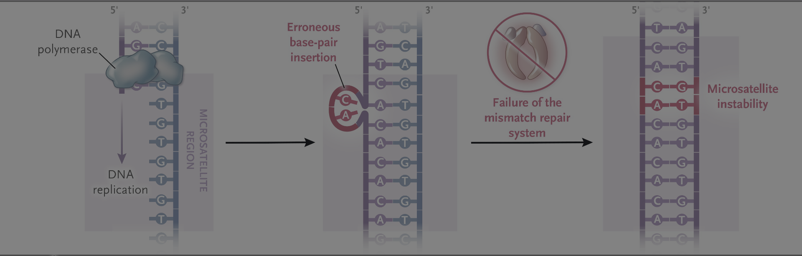
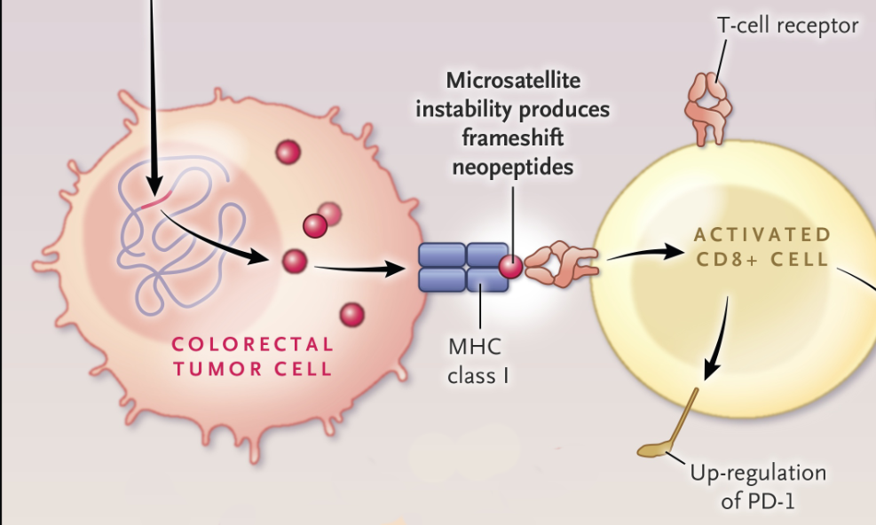
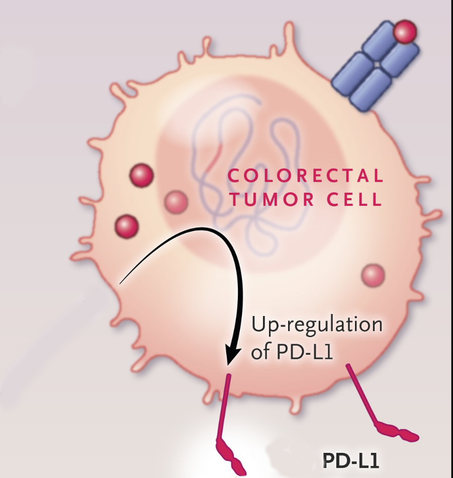
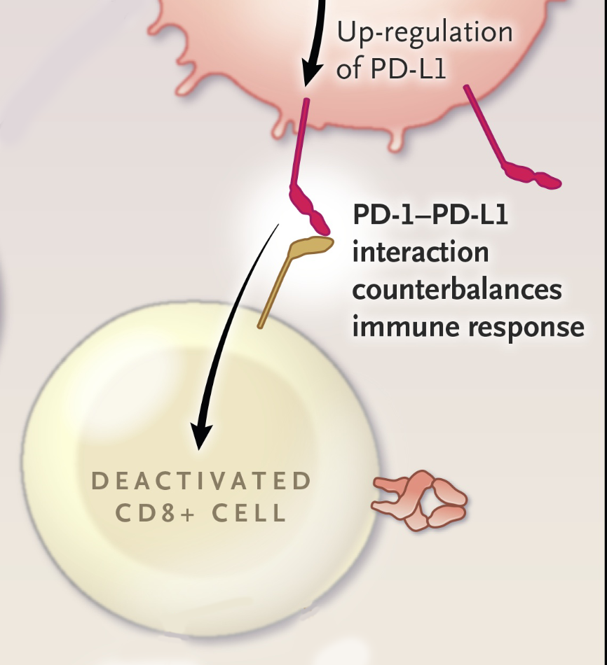
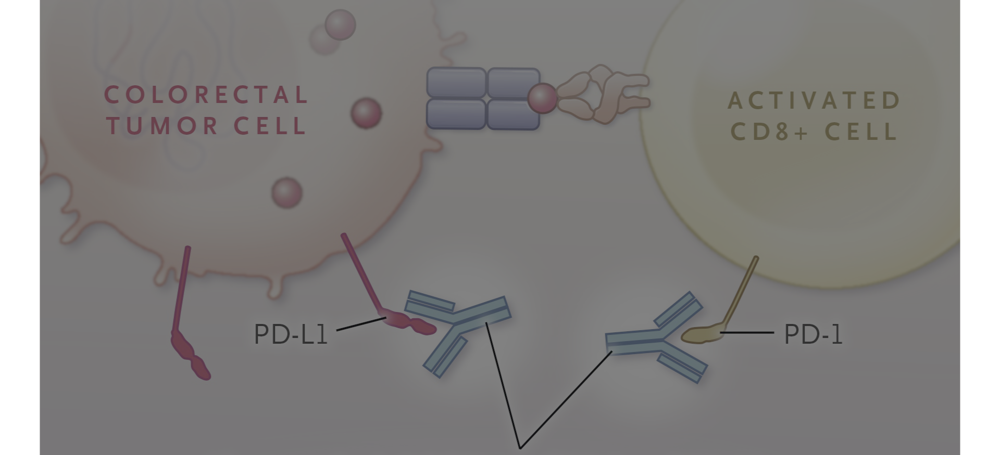

Colonoscopy age 10-12 EGD for duodenal polyps at age 20-30 CT 1-3 years after colectomy and q5 yers in those with family hx of desmoids
Colonoscopy q1-2 years staring age 20-25
Lynch Syndrome can be caused by loss of expression of:
Deficiency in mismatch repair proteins \(\rightarrow\) microsatellite instability
15% of colorectal cancers are MMR-deficient
Sporadic - Promoter methylation of MLH1 by BRAF V600E mutation (10%)
Lynch - Due to mutations in mismatch repair genes (5%) 90% of Lynch tumors are MMR-deficient
Reflex testing for BRAF V600E mutation is essential for MMR-deficient tumors
Deficiency in mismatch repair proteins \(\rightarrow\) microsatellite instability

MMR Protein expression can be detected by immunohistochemistry
Microsatellite Instability can be detected by pCR
97-99%+ concordance between dMMR and MSI-High status
Mutational burden from dMMR causes MSI-High tumors to be immunogenic




Inhibition of PD-L1 and PD-1 interaction activates T cellsImmunohistochemistry analysis of 1800 colorectal cancer specimens:
PD-L1 was more often positive in dMMR (18.6%) than in MMR proficient (pMMR) cancers (4.1%; p < 0.0001)
Clinical Relevance of Microsatellite Instability in Colorectal Cancer. Journal of Clinical Oncology : Official Journal of the American Society of Clinical Oncology. 2010. de la Chapelle A, Hampel H.
115 colon cancer: neoadjuvant nivolumab + ipilimumab \(/rightarrow\) surgery
109 patients had a pathological response
105 Major pathological respoinse (TRG1 or TRG2)
No recurrence of disease at median follow up of 26 months
ASCO: No benefit of treatment of stage II dMMR colon cancer with 5-FU alone
Ppooled analyses showing no difference in disease-free survival (HR 0.89, 95% CI 0.45-1.74) or overall survival (HR 1.03, 95% CI 0.53-2.02) with adjuvant chemotherapy in this population.
Oxaliplatin-based chemotherapy (FOLFOX or CapeOX) and atezolizumab (Tecentriq)
ATOMIC trial: atezolizumab + mFOLFOX6 is superior to mFOLFOX6 alone, with a 3-year disease-free survival rate of 86.4% versus 76.6% (hazard ratio 0.50, P .0001)
≥5 serrated polyps/lesions proximal to the rectum, all being ≥5 mm in size, with ≥2 being ≥10 mm in size OR >20 serrated polyps/lesions of any size distributed throughout the large bowel, with ≥5 being proximal to the rectum
(FAP) is caused by germline mutations in the APC gene and leads to the development of hundreds to thousands of colorectal adenomas, with nearly 100% risk of colorectal cancer if untreated. [4]
~30 polyps 70% penetrance by age 80 - mean age at dx 50-55